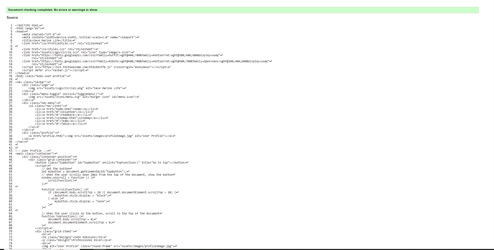
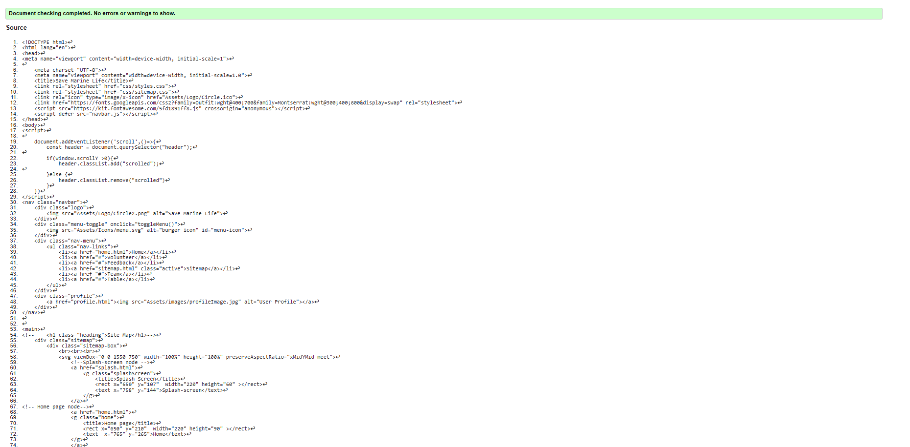
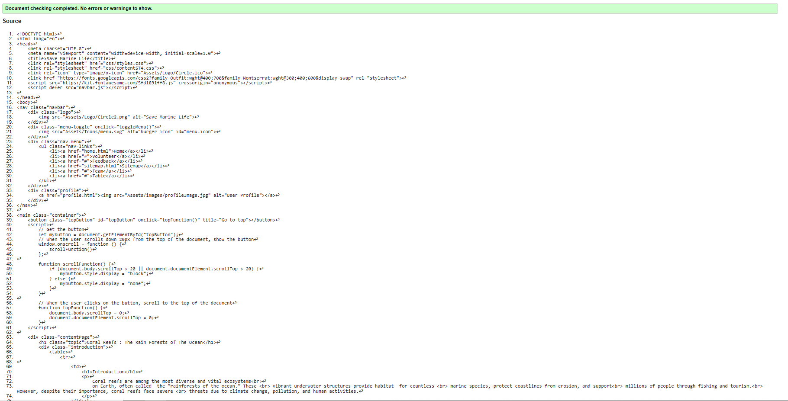

Profile Page validation report
Profile page is validated without any errors
Back to Page Editor page
Include a link back to the corresponding section of the Page Editor.
Volunteer Page validation report
Sitemap page is validated without any errors.
Back to Page Editor page
Include a link back to the corresponding section of the Page Editor.
Content Page validation report
page is validated without any errors
Back to Page Editor page
Include a link back to the corresponding section of the Page Editor.